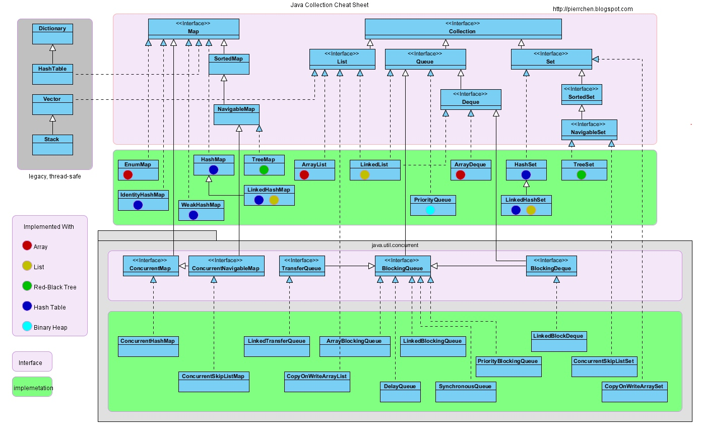

Set
TreeSet
基于红黑树实现，支持有序性操作，例如根据一个范围查找元素的操作。但是查找效率不如 HashSet，HashSet 查找的时间复杂度为 O(1)，TreeSet 则为 O(logN)。
HashSet
基于哈希表实现，支持快速查找，但不支持有序性操作。并且失去了元素的插入顺序信息，也就是说使用 Iterator 遍历 HashSet 得到的结果是不确定的。
LinkedHashSet
具有 HashSet 的查找效率，且内部使用双向链表维护元素的插入顺序。
List
ArrayList
基于动态数组实现，支持随机访问。
Vector
和 ArrayList 类似，但它是线程安全的。
LinkedList
基于双向链表实现，只能顺序访问，但是可以快速地在链表中间插入和删除元素。不仅如此，LinkedList 还可以用作栈、队列和双向队列。
Queue
LinkedList
可以用它来实现双向队列。
PriorityQueue
基于堆结构实现，可以用它来实现优先队列。
Map
TreeMap
基于红黑树实现。
HashMap
基于哈希表实现。
HashTable
和 HashMap 类似，但它是线程安全的，这意味着同一时刻多个线程可以同时写入 HashTable 并且不会导致数据不一致。它是遗留类，不应该去使用它。现在可以使用 ConcurrentHashMap 来支持线程安全，并且 ConcurrentHashMap 的效率会更高，因为 ConcurrentHashMap 引入了分段锁。
LinkedHashMap
使用双向链表来维护元素的顺序，顺序为插入顺序或者最近最少使用(LRU)顺序